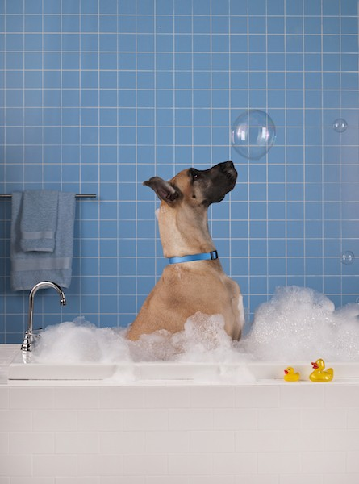

April 12, 2016
Healthy Pets

Fleas and ticks can cause big problems for pets and their owners. In one day a single flea can bite your dog/cat more than 400 times, consuming more than its body weight of your pet’s blood. But do we really want to douse our pets in harsh chemicals to get rid of these critters? Originally designed as agents for chemical warfare, the most commonly used pesticides are becoming increasingly stronger to keep pace with fleas’ heightened immunity. No, thanks! Here are some healthy alternatives:
- Maintain healthy coat and skin through a healthy diet. Raw food is best with supplements of garlic and brewer’s yeast.
- Sprinkle rugs with table salt and vacuum up. Dispose of vacuum bag.
- Wash small rugs, upholstery and dog beds weekly in flea season.
- Shampoo regularly. Add lemon juice or vinegar.
- Use a natural spray with citronella, eucalyptus, rosemary, tea tree or peppermint oils.
- Use Flea Comb daily and dip in warm, soapy water between each brush.
- Keep cats indoors (also good for your local songbird population!).